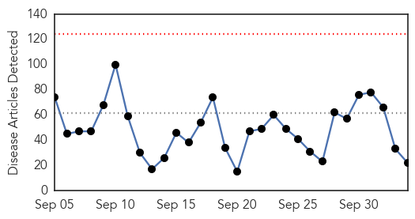
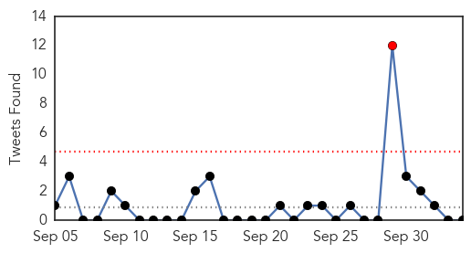
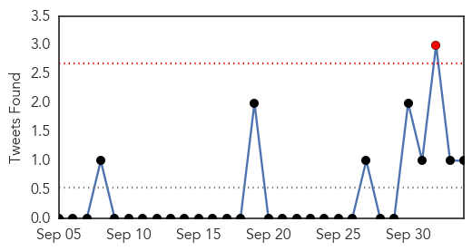
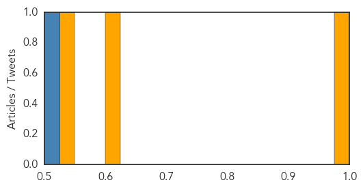

Unknown
30-Day Web Trend
0 alerts, 0 warnings

30-Day Twitter Trend
1 alerts, 0 warnings

Article Locations

Article Confidences

Top Articles:
- 0.896
- Sumatra hospital says no jump in acute respiratory illnesses despite haze
- 0.879
- San Quentin Legionnaires' Outbreak Traced to Cooling Towers
- 0.835
- 84 Southern Thai Hajj pilgrims pass initial Mers screening at Phuket airport
- 0.823
- Venison prepartion warning as nine hit by E.coli bug
- 0.776
- Living with HIV in Egypt
- 0.749
- Villagers demand immediate health services
- 0.705
- Portuguese back austerity as conservatives win election
- 0.705
- Deadly flash floods strike French Riviera
- 0.705
- Gunman in Oregon college massacre committed suicide
- 0.680
- How a Simple New Policy Could Change the Lives of Millions Facing HIV
- 0.677
- 'Dressing material in stock'
- 0.652
- Welsh government begins investigation after mad cow disease identified in dead animal -- Earth Changes -- Sott.net
- 0.652
- What It Is and What Is Being Done
- 0.622
- PEPFAR continues to support fight against HIV/AIDS
- 0.601
- Salmonella Outbreak at Fig & Olive Restaurants Remains a Mystery
- 0.590
- Deaths from encephalitis less, vaccine out in November
- 0.565
- Water shortage hounds several Bicol towns
- 0.556
- Lessen The Odds Of Bringing Home Souvenir Cough, Sniffles Or Disease When Traveling
- 0.534
- DEM issues warning for East Providence's Turner Reservoir
- 0.527
- Some doctors flee, others hiding in Kunduz
- 0.512
- Erie-area hospitals have mixed results in reducing infections
- 0.505
- Supply-side dimensions and dynamics of integrating HIV testing and counselling into routine antenatal care: a facility assessment from Morogoro Region, Tanzania
Top Tweets:
-
No tweets found for Oct 04, 2015
Cholera
30-Day Web Trend
0 alerts, 0 warnings

30-Day Twitter Trend
1 alerts, 0 warnings

Article Locations
Article Confidences
Top Articles:
Top Tweets:
- 0.513
- RT: "Fight the Outbreak" of cholera in Haiti by sharing this short video to seek UN accountability: http://t.co/mXqHZ4DuZg